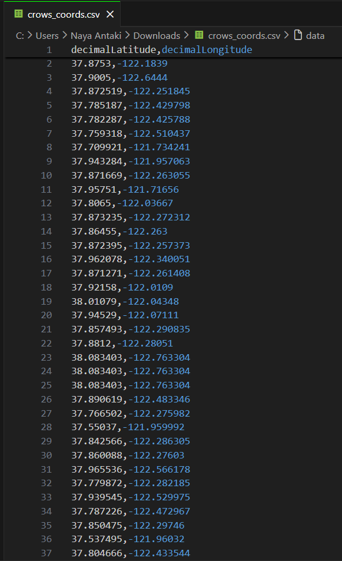
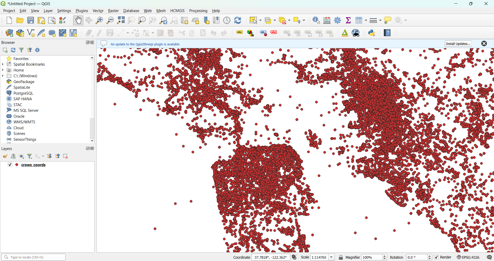

overview
A cartographic record of American Crow sightings across the San Francisco Bay Area, exploring how urban density shapes the spatial behavior of one of the city's most familiar yet overlooked inhabitants. Conventional wildlife distribution maps treat observation points as neutral data, just dots on a surface. This map asks what those concentrations reveal about the relationship between human settlement and animal presence. By layering crow sightings drawn from various institutional and research datasets over a 25 year period (2001-2026) against the Bay Area's topographic and urban fabric, "Murder" in the Bay examines how crows do not merely tolerate cities, but actively orient themselves within them.
process
To create the poster, American Crow occurrence records spanning 2001-2026 were downloaded from GBIF as a Simple CSV, then processed in Python using pandas to extract valid coordinate pairs and export a cleaned dataset. The filtered data was brought into QGIS as a WGS 84 delimited text layer and composited over a Digital Elevation Model sourced from the USGS National Map (3DEP 1/3 arc-second GeoTIFF), with point styling applied to reflect observation density across the Bay Area. Individual USGS 1:24,000-scale topographic tiles from 2021 were manually assembled into a contiguous basemap in Photoshop, where typography, legend, and layout were refined. The final composition was exported and printed on satin poster paper via an HP DesignJet Z9+.
tools


